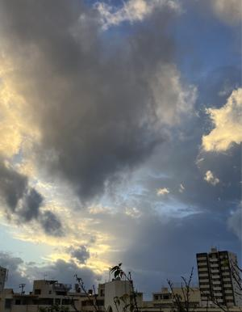

うるがいの話 ある日
最新: お葬式【うるがいの話 ある日】とは 一日だけのプログです
『うるがいの話』の最新一日だけのプログで、通信料が少なく経済的だ。カニの画像をクリックすると全ての日付が載る『うるがいの話』サイトを表示します
|
|
【うるがいの話】 うるがい(ｳﾙｶﾞｲ urugai)とは、『もずくがに』の名前でとても大きくなります。 |
|---|---|
|
|
【カミマヤーの話】 猫のことを方言でマヤーといいます。カミマヤー（kamimayaa）とは、神の猫のことです。 |
|
【たながぁの音楽】 たながぁ（ﾀﾅｶﾞｰ tanagaa）とは手長えびのことで、何種類かあり大きいのは車 エビぐらいになります。 |

|
【ぶながぁの話】 ぶながぁ(ﾌﾞﾅｶﾞｰ bunagaa)とは、赤い髪の毛、赤い身体、そして身長は１ｍ２０ｃｍ ぐらい、川の蟹を食べているの目撃された。場所は沖縄県国頭郡大宜味村のと ある村僕の隣近所に住んでいる爺さんから、聞いた話です。 |
|
|
【ギーマの話】 ギーマ(giima)とは、山原の里山に咲くスズランに似た、 花を付けます。実は食べられます、 気が付くと口の周りが紫になっています。 |
2024年11月26日 (火）お葬式
15:08

日の出前に家を出て、葬儀の駐車場に着くと東の空の朝焼けが綺麗だっ
た（日の出６時５７分）。
出棺の集合時間は７時１５分、集合場所へ行くとアレ？、ビルの玄関が
開かない！、ビルの案内を確認する、アレ？、名前がない！。すると知
らない小母さんから、オクさんの所ですかと声をかけてくれた。ハイと
答えるとあそこの隣のビルですよと教えくれた。集合場所へ着くとごく
身内だけだった。喪主の叔父さんに声をかける、『墓（東村）まで行く
か、マイクロバスに乗ればいいよ』と言う、一瞬、行こうかなと思った
が、『うるがい兄ちゃんは、火入れで帰るヨ』と事前に伝えていた次男
が答えてくれた。そうそう、午後は、昨日１２カ月点検で預けていた子
供の軽自動車を取りに行くことになっていたんだと思いだす（アブナイ
アブナイ）。
ふと周りを見渡すと、先ほどの小母さんがいた。『・・・、○○（私の
母親の名前）の長男、孫？』と私に向かって言う（父親に似ているらし
い）。ええ、長男です。すると小母さんは、自己紹介をする。分かる分
かる、ヤンバルには帰ったり、しますか？と尋ねると週２日ほどと答え
る。甥っ子も知っているホー。時間が経つにつれ、大勢の人達、この前
のお義母さんと時を大違い、カメラマンもいた。新聞の告別式広告をみ
ると甥姪代表で知らない男性の名前があったので、叔父さんに尋ねた。
叔父さん側の甥っ子の代表とのこと、ヨメの職場の知り合いもいると言
っていたので、葬儀の合間にヨメの職場の知り合いの人と挨拶する。
東村のお墓は、この前の豪雨災害は大丈夫でしたかと尋ねると、墓を大
丈夫だったが、畑などはね被害にあったみたい、ただ河川のしゅんせつ
工事をしていたから被害は少なかったはずと言っていた。
葬式の時にしか会わない、従妹たちと会う。皆さん老けた。ということ
は私も同じように老けているのだろう。
あ、私に声をかけてくれた人、辺士名の病院（今はない）で、私が耳に
大豆を入れた時に対応してくれた看護婦かも（いつか確認しよう）。
１５時００分 ビットコインの総資産 ￥４２、２３６（↓１、７０６）
売却額 ￥４０、９７９